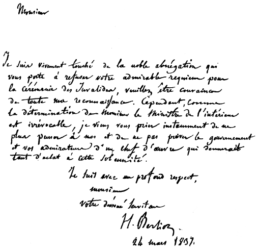

Monsieur
Je suis vivement touché de la noble abnégation qui
vous porte à refuser
notre admirable requiem pour
la cérémonie des Invalides, veuillez être
convaincu
de toute ma reconnaissance. Cependant, comme
la détermination
de Monsieur le Ministre de l'intérieur
est irrévocable, je viens vous
prier instamment de ne
plus penser à moi et de ne pas priver le
gouvernement
et vos admirateurs d'un chef d'œuvre qui donnerait
tant d'éclat à cette solennité.
Je suis avec un profond respect,
monsieur
votre dévoué serviteur
H. Berlioz
24 mars 1837.
